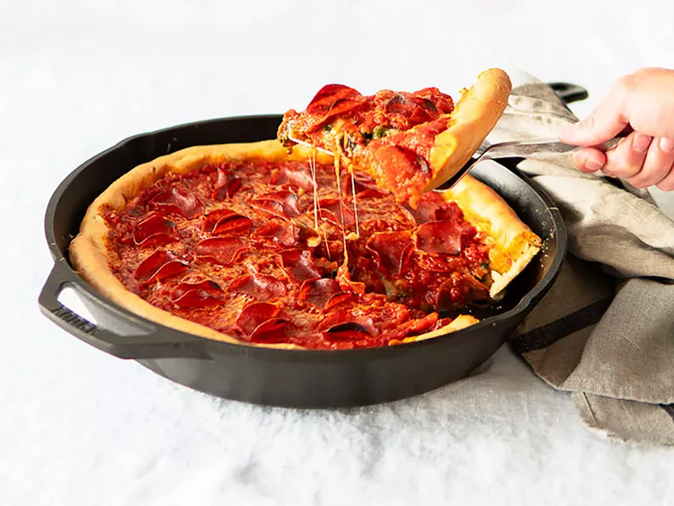

The Real Chicago Deep-Dish Pizza Dough

Nutrition Facts(per serving)
- 299 Calories
- 14g Fat
- 37g Carbs
- 5g Protein
Ingredients:
- 2 ¼ teaspoons active dry yeast
- 1 ½ teaspoons white sugar
- 1 ⅛ cups warm water - 110 to 115 degrees F (43 to 45 degrees C)
- 3 cups all-purpose flour
- ½ cup corn oil
- 1 ½ teaspoons kosher salt
- butter as needed, for greasing
Directions:
- Dissolve yeast and sugar in warm water in a bowl. Let stand until yeast softens and begins to form a creamy foam, 5 to 10 minutes.
- Combine yeast mixture, flour, corn oil, and kosher salt in a large stand mixer fitted with the dough hook; knead until dough holds together but is still slightly sticky, about 2 minutes.
- Form dough into a ball and transfer to a buttered bowl. Turn to coat dough with butter, then cover the bowl with a towel and let rise in a warm place until doubled in volume, about 6 hours.
- Punch down dough and let rest for 10 to 15 minutes. Press dough into a 10-inch deep-dish pizza pan and follow your pizza recipe.
To Make the Pizza:
Add cheese, toppings, and tomatoes that you've flavored with garlic, basil, oregano, etc.
Bake the pizza in an oven preheated to 450 degrees F (230 degrees C) for about 30 minutes, depending on your oven.
You can prebake the crust for 10-15 minutes before adding toppings if desired.
Home